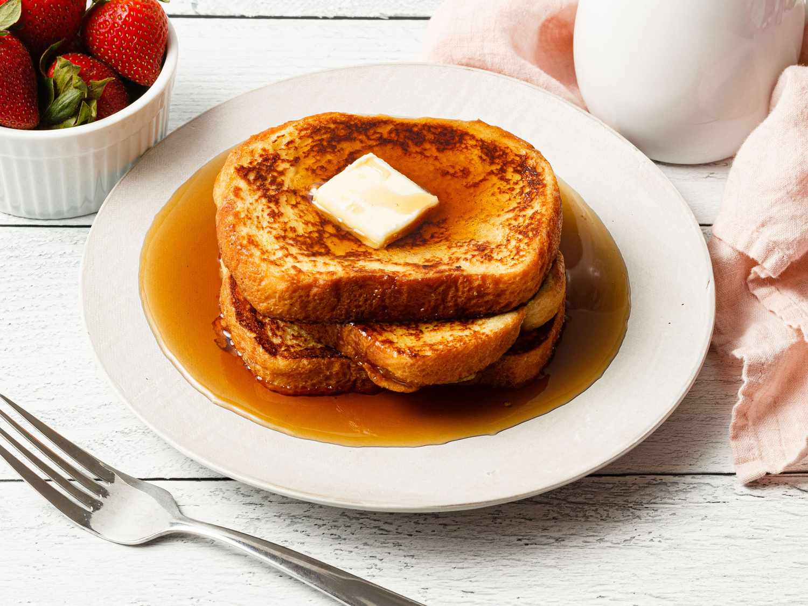

French Toast

Descrpition
There are many, fancy variations on this basic recipe.
This easy recipe works with many types of bread – white,
whole wheat, brioche, cinnamon-raisin, Italian, or French.
Serve hot with butter or margarine and maple syrup.
Ingridients
- ⅔ cup milk
- 2 large eggs
- 1 teaspon vanilla extract (Optional)
- salt to taste
- 6 thick slices bread
- 1 table sppon unsalted butter, or
more as needed
Directions
- Whisk milk, eggs, vanilla, cinnamon, and salt together
in a shallow bowl.
- Lightly butter a griddle and heat over medium-high heat.
- Dunk bread in the egg mixture, soaking both sides.
Transfer to the hot skillet and cook until golden, 3 to
4 minutes per side. Serve hot.